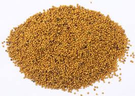

Tên khác:
Vị thuốc Bạch giới tử còn gọi là Hồ giới (Đường Bản Thảo), Thục giới (Bản Thảo Cương Mục), Thái chi, Bạch lạt tử (Trung Quốc Dược Học Đại Từ Điển), Hạt cải trắng, Hạt cải bẹ trắng (Việt Nam)
Tên khoa học: Brassica Alba (L) Boiss hay Brassica a Juncea (L). Czem te Coss (Sinapis Juncea L.)
Họ khoa học: thuộc họ Cải (Brassicaceae).
Tên tiếng trung: 白芥子
Cây Bạch giới tử
( Mô tả, hình ảnh, thu hái, chế biến, thành phần hoá học, tác dụng dược lý ....)
Mô tả:
Loại thảo sống hàng năm. Lá đơn mọc so le có cuống. Cụm hoa hình trùm, hoa đều lưỡng tính, 4 lá dài, 4 cánh hoa xếp thành hình chữ thập, Có 6 nhị (4 chiếc dài, 2 chiếc ngắn). Bộ nhụy gồm 2 tâm bì bầu thường 2 ô do một vách giả ngăn đôi. Quả loại cải có lông, mỏ dài, có 4-6 hạt nhỏ màu vàng nâu có vân hình mạng rất nhỏ.
Phân bố:

Trồng khắp nơi bằng hạt, vào mùa thu đông để lấy rau nấu ăn.Khoảng tháng 3 – 5, hái quả gìa, lấy hạt phơi khô.
Phần dùng làm thuốc:
Hạt. Loại hạt to, mập, mầu trắng là tốt.
Mô tả dược liệu:

Bạch giới tử hình cầu, đường kính khoảng 0,16cm. Vỏ ngoài mầu trắng tro hoặc mầu trắng vàng, một bên có đường vân rãnh hoặc không rõ ràng. Dùng kính soi phóng to lên thấy mặt ngoài có vân hình màng lưới rất nhỏ, một đầu có 1 chấm nhỏ. Bẻ ra bên trong có nhân thành từng lớp mầu trắng vàng, có dầu. Không mùi, vị cay, tê (Dược Tài Học).
Bào chế:
+ Lấy hạt cho vào nước, rửa sạch, vớt bỏ những hạt nổi lên trên, lấy những hạt chìm đem phơi khô.
+ Lấy Bạch giới tử sạch cho vào chảo, để lửa nhỏ, sao cho đến khi có mầu vàng sẫm và bốc ra mùi thơm là được (Dược Tài Học).
+ Có thể trộn với nước để đắp bên ngoài.
Bảo quản:
Đựng trong lọ kín, tránh ẩm.
Thành phần hoá học:

Sinalbin, sinapine, myrosin, Theo sách của GS Đỗ tất Lợi trong Giới tử có 1 glucosid gọi là sinigrin, chất men myroxin, sinapic acid, một ít alkaloid gọi là saponin, chất nhầy, protid và chưừng 37% chất béo, trong đó chủ yếu là este của sinapic acid, arachidic acid, linolenic acid.
Glucosinolate (Jens K N và cộng sự, Entomol Exp Apppl, 1979, 25 (3): 227 (C A 1979, 91: 87848h).
. Sinalbin (Ngải Mễ Đạt Phu,Tối Tân Sinh Dược Học (Nhật Bản) 1953: 205).
. Sinapine (Regenbrecht J và cộng sự, Phytochemistry 1985, 24 (3): 407).
. Lysine, Arginine, Histidine (Appelqvist L A và cộng sự, Qual Plant-Plant Foods Rum Nutr 1977, 27 (3 - 4): 255 (C A 1978 88: 73221z).
Tác dụng dược lý:

+Men Myroxin thủy phân sinh ra dầu giới tử kích thích nhẹ niêm mạc bao tử gây phản xạ tăng tiết dịch khí quản mà có tác dụng hóa đàm.
+Có tác dụng kích thích tại chỗ ở da làm cho da đỏ sung huyết, nặng hơn gây phỏng nóng rát.
+Dung dịch nước 1:3 có tác dụng ức chế nấm ngoài da
Vị thuốc Bạch giới tử
( Công dụng, Tính vị, quy kinh, liều dùng .... )

Tính vị:
Vị cay, tính ôn, không độc (Bản Thảo Phẩm Hội Tinh Yếu).
Quy kinh:
+ Vào kinh Can, Tỳ, Phế, Tâm bào (Bản Thảo Tân Biên).
Công dụng:
+ Lợi khí, hóa đờm. trừ hàn, ôn trung, tán thủng, chỉ thống. Trị suyễn, ho, phản vị, cước khí, tê bại (Bản Thảo Cương Mục).
+ Lợi khí, thông đờm, ôn trung, khai vị (Đông Dược Học Thiết Yếu).
+ Ôn hóa hàn đờm, hành trệ, chỉ thống, bạt độc, tiêu thủng (Lâm Sàng Thường Dụng Trung Dược Thủ Sách).
+ Trị hàn đờm ở ngực, ho suyễn do hàn đờm, đờm kết lại ở vùng dưới da và giữa gân xương. Nếu trị nhọt độc: tán bột, trộn với giấm đắp (Đông Dược Học Thiết Yếu).
+ Trị ho suyễn do hàn đờm, căng đầy đau bụng, đau nhức tứ chi cả người do đờm, giảm cơn đau, đinh nhọt thuộc âm tính (Lâm Sàng Thường Dụng Trung Dược Thủ Sách). Liều dùng:
Liều dùng:
Dùng từ 1-12g.
Tán bột trộn giấm đắp ngoài da, ở ngoài liều lượng tùy ý.
Kiêng kỵ:
+ Phế kinh có nhiệt và phù dương hư hỏa bốc lên, ho sinh đờm: kiêng dùng (Bản Thảo Kinh Sơ).
+ Phế khí hư, trong Vị có nhiệt: kiêng dùng (Đắc Phối Bản Thảo).
+ Phế hư, có nhiệt, âm hư hỏa bốc lên sinh ra đờm, ho: không dùng (Đông Dược Học Thiết Yếu).
+ Người khí hư có nhiệt, ho khan do khí phếhư cấm dùng, không có phong hàn, đờm trệ, cấm dùng (Lâm Sàng Thường Dụng Trung Dược Thủ Sách).
Ứng dụng lâm sàng của vị thuốc Bạch giới tử
Trị ăn vào mửa ra hay ợ lên
dùng Bạch giới tử tán bột, uống 4 – 8g với rượu (Phổ Tế Phương).
Trị bực bội, nóng nảy trong người, vị nhiệt, đờm:
Bạch giới tử, Hắc giới tử, Đại kích, Cam toại, Mang tiêu, Chu sa, mỗi vị liều lượng đều nhau trộn hồ làm viên bằng hạt ngô, ngày uống 10 viên với nước gừng (Phổ Tế Phương).
Trị đầy tức do hàn đờm
dùng Bạch tử, Đại kích, Cam toại, Hồ tiêu, Quế tâm các vị bằng nhau tán bột viên hột bằng hạt ngô đồng, lần uống 10 viên với nước gừng (Phổ Tế Phương).
Trị hơi lạnh trong bụng đưa lên:
Bạch giới tử 1 chén, sao qua, tán bột, trộn với nước sôi làm hoàn to bằng hạt đậu xanh. Mỗi lần uống 10 hạt vơi nước Gừng (Tục Truyền Tín Phương).
Phòng ngừa đậu mùa nhập vào mắt:
Bạch giới tử nghiền bột, trộn nước gián dưới lòng bàn chân để kéo độc xuống (Toàn Ấu Tâm Giám Phương).
Trị ngực sườn bị đờm ẩm:
Bạch giới tử 20g, Bạch truật 80g, tán bột. Nghiền nát Táo nhục, trộn với thuốc bột làm thành viên, tobằng hạt ngô đồng.Uống 50 viên với nước (Trích Huyền Phương).
Trị hàn đờm ủng tắc ở phế, ho suyễn, đờm nhiều chất dãi trong, sườn ngực đầy tức:
Bạch giới tử 4g, Tử tô, Lai phúc tử, mỗi thứ 12g sắc uống (Tam Tử Dưỡng Thân Thang).
Trị đờm ẩm lưu ở ngực, mô, ho, suyễn, ngực sườn đầy tức:
Đại kích (bỏ vỏ), Cam toại (bỏ ruột), Bạch giới tử, lượng bằng nhau. Tán bột. Trộn với nước cốt Gừng làm viên. Ngày uống 1 lần, mỗi lần 2-4g với nước Gừng tươi sắc (Lâm Sàng Thường Dụng Trung Dược Thủ Sách).
Trị đau nhức các khớp do đờm trệ:
Mộc miết tử 4g, Bạch giới tử, Một dược, Quế tâm, Mộc hương mỗi thứ 12g, tán bột. Mỗi lần uống 4g, ngày 2 lần, với rượu nóng (Bạch Giơi Tử Tán - Lâm Sàng Thường Dụng Trung Dược Thủ Sách).
Trị hạch lao ở cổ:
Bạch giới tử, Thông bạch lượng bằng nhau. Đem Bạch giới tử tán bột trộn với hành trắng đã gĩa nát. Đắp lên vùng hạch, ngày một lần, cho đến khi khỏi (Lâm Sàng Thường Dụng Trung Dược Thủ Sách).
Trị nhọt sưng độc mới phát:
Bạch giới tử, tán bột, trộn giấm đắp vào (Lâm Sàng Thường Dụng Trung Dược Thủ Sách).
Trị trẻ nhỏ phế quản viêm cấp hoặc mạn:
Bạch giới tử 100g, tán bột. Mỗi lần dùng 1/3, thêm bột mì trắng 90g, thêm nước vào làm thành bánh. Trước lúc đi ngủ, đắp vào lưng trẻ. Sáng thức dậy, bỏ đi. Đắp 2 – 3 lần. Đã trị 50 ca, kết quả tốt (Kỳ Tú Hoa và cộng sự, Hắc Long Giang Trung Y Dược Học Báo 1988, 1: 29).
Trị trẻ nhỏ bị phổi viêm:
Bạch giới tử tán bột, trộn với bột mì và nước làm thành bánh, đắp ở ngực. Trị 100 ca phổi viêm nơi trẻ nhỏ, thuốc có tác dụng tăng nhanh tác dụng tiêu viêm (Trần Nãi cần, Trung Tây Y Kết Hợp tạp Chí 1986, 2: 24).
Một số bài thuốc có bạch giới tử làm chủ:
Bạch Giới Tử Tán (Chứng Trị Chuẩn Thằng.- Vương Khẳng Đường) Trị vinh khí và vệ khí lưu hành không đều, huyết trắng do đờm gây ra, tê bại.
Bạch Giới tử Hoàn (Tạp Bệnh Nguyên Lưu Tê Chúc (Lục Dâm), Q.14. Thẩm Kim Ngao) Tiêu thực, đạo trệ, nhuyễn kiên, trừ bỉ. Trị bỉ khối.
Tam tử dưỡng thân thang (hàn thị y thông) trị các trứng viêm đường hô hấp, viêm phế quản cấp mãn tính, ho đờm nhiều trong trường hợp phong hàn nặng, gia lượng tô tử ngực đau nhiêu gia lượng bạch giới tử. Trương hợp bụng đây ăn không tiêu gia la bạc tử
Tham khảo
Tính vị- Qui kinh
Sách Bản thảo phẩm hội tinh yếu: vị cay, tính ôn, không độc.
Sách Bản thảo phùng nguyên: cay ôn hơi độc. Sách Thực vật bản thảo: cay nhiệt.
Lôi công bào chế dược tính giải: nhập 2 kinh phế vị.
Sách Bản thảo tân biên: nhập Can Tỳ Phế Vị Tâm và Tâm bào lạc.
Công dụng:
Sách Danh y biệt lục: "chủ trừ thận tà khí, lợi cửu khiếu, minh nhĩ mục, an trung, cửu phục ôn trung (uống lâu ấm trung tiêu tức tỳ vị)".
Sách Bản thảo cương mục: " lợi khí hóa đàm, trừ hàn ấm trung, tán thũng chỉ thống, trị suyễn thấu, phản vị, tý mộc cước khí (chứng cước khí đau tê dại), gân cốt yêu tiết chư thống (các chứng đau gân cốt, đốt sống thắt lưng)".
Sách Bản thảo cầu chân: " sách ghi thuốc có thể trị các chứng đàm ở dưới sườn trong da ngoài mô
Nơi mua bán vị thuốc BẠCH GIỚI TỬ đạt chất lượng ở đâu?
Trước thực trạng thuốc đông dược kém chất lượng, nguồn gốc không rõ ràng,... xuất hiện tràn lan trên thị trường, làm ảnh hưởng tới hiệu quả điều trị cũng như ảnh hưởng tới sức khỏe của bệnh nhân. Việc lựa chọn những địa chỉ uy tín để mua thuốc đông dược là rất quan trọng và cần thiết. Vậy khách hàng có thể mua vị thuốc BẠCH GIỚI TỬ ở đâu?
BẠCH GIỚI TỬ là vị thuốc nam quý, được sử dụng rộng rãi trong YHCT. Hiện tại hầu hết các cửa hàng thuốc đông dược, phòng khám đông y, phòng chẩn trị YHCT... đều có bán vị thuốc này. Tuy nhiên người mua nên chọn những địa chỉ có uy tín, đảm bảo chất lượng, có giấy phép hoạt động để mua được vị thuốc đạt chất lượng.
Với mong muốn bệnh nhân được sử dụng những loại dược liệu đúng, chất lượng tốt, phòng khám Đông y Nguyễn Hữu Toàn không chỉ là đia chỉ khám chữa bệnh tin cậy, uy tín chất lượng mà còn cung cấp cho khách hàng những vị thuốc đông y (thuốc nam, thuốc bắc) đúng, chuẩn, đạt chuẩn chất lượng. Các vị thuốc có trong tiêu chuẩn Dược điển Việt Nam đều được nghành y tế kiểm nghiệm đạt chất lượng tiêu chuẩn.
Vị thuốc BẠCH GIỚI TỬ được bán tại Phòng khám là thuốc đã được bào chế theo Tiêu chuẩn NHT.
Giá bán vị thuốc BẠCH GIỚI TỬ tại Phòng khám Đông y Nguyễn Hữu Toàn: 130.000vnd/1kg
Tùy theo thời điểm giá bán có thể thay đổi.
+ Khách hàng có thể mua trực tiếp tại địa chỉ phòng khám: Cơ sở 1: Số 481 lô 22 Lê Hồng Phong, Phường Gia Viên, Thành phố Hải Phòng
+ Mua trực tuyến: Thuốc được chuyển qua đường bưu điện. Khi nhận được thuốc khách hàng thanh toán tiền COD.
Tag: cay bach gioi tu, vi thuoc bach gioi tu, cong dung bach gioi tu, Hinh anh cay bach gioi tu, Tac dung bach gioi tu, Thuoc nam
Thaythuoccuaban.com Tổng hợp
*************************